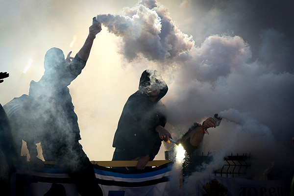
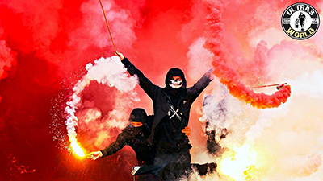

Ultras er den fangruppe som mest fanatisk går op i stemning, lys og farver. Ultras kan godt være voldelige, men deres hovedfokus især her i Danmark er at være stemningsskabene. Så det vil sige at når man ser de hoppende glade unge mennesker på stadion er de sandsynligvis ikke hooligans, men Ultras. Hooligans kan dog godt lide at stå blandt de her fans og de kan såmænd også godt deltage i stemningen ligeså passionsfyldt. Forskellen er blot at Ultras ikke er voldelige. Ultras har dog hang til hooligan kulturen. I hooligan kulturen er der en subkultur der hedder Casuals. .


Et udtryk der kom af at engelske hooligans tilbage i 70’rne kom tilbage fra kampe i Italien med designer tøj de havde stjålet fra de italienske hooligans. Det har ført til at der er en vis uniform man kan have på som både hooligan og ultras. Og det er tit sådan at politiet spotter uheldige elementer inden kampene. Givet at mange fans synes at denne stil og subkultur er fed men måske ikke lige finder volden så attraktiv, så klæder de sig i disse år mere og mere som Hooligans gør dog uden at være det.
Eks på mærkerne som en ultras og hooligan vil gå i er: Fred Perry, Ralph Lauren, Stone Island, Adidas, Lacoste, Hugo Boss, Sergio Tacchini etc.Det kan nok godt virke som en meget fjollet ting for fodboldfans som alligevel skal tildynges i øl og røglugt at have, men det har været en del af kulturen i mange år og looket har såmænd også vundet plads i populær kultur.
Som før skrevet går Ultras meget op i stemning. Det kommer til udtryk ved sange og specielle fanaktiviteter der kaldes ”Tifo”. Noget som der kommer til udtryk er affyringen af romerlys som giver en speciel atmosfære hvor stemningen er bedst. Dette er dog ulovligt og fans må så stå overfor store pengebøder hvis de bliver taget i at fyre et romerlys af på et stadion, helt op til 5000 kr .